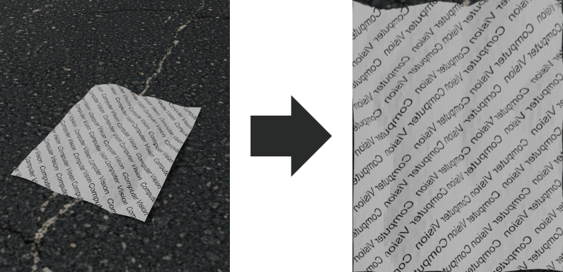

Page Rectification Pipeline
Automatic Document Detection & Homography Transform
Project Summary
This project implements an automatic document rectification pipeline that detects a document within an image, finds its corners, and applies a homography transform to produce a top-down, flattened version of the page. The pipeline processes all images in an input folder and outputs rectified versions to an outputs directory.
4
Corner Detection
Auto
Batch Processing
OpenCV
Framework
Python
Language
How It Works

Example: original image → rectified output
Pipeline Steps
Image Processing
- Grayscale conversion
- Gaussian blurring
- Canny edge detection
- Morphological processing
Geometry & Transform
- Contour extraction
- Ramer-Douglas-Peucker simplification
- 4-corner detection & ordering
- Homography computation (OpenCV)
Theory to Practice
These were all mathematical concepts that I learned in my computer vision class, so it really helped to implement them in a real project to understand them even better.